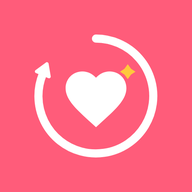

Testuj ReCrush 💕
Dzięki, że pomagasz! ReCrush to apka dla par z gotowymi pomysłami na wspólny czas, rocznice i prezenty. Dołączenie zajmuje minutę – wystarczy jeden przycisk, dalej poprowadzi Cię wpis w grupie.
Jak dołączyć
Kliknij przycisk poniżej, a na stronie grupy – „Dołącz do grupy”. Jeśli mignie „Coś poszło nie tak”, a na dole widzisz „Udało się dołączyć do grupy”, wszystko jest w porządku.
Kliknij wpis „Witaj w testach ReCrush”, a w nim link do testu.
Kliknij „Become a tester” (Zostań testerem), potem niebieski link „download it on Google Play” i zainstaluj apkę.
Lista uczestników jest ukryta – nikt nie zobaczy, że testujesz.
Zobacz, jak to wygląda (30 s)
Cała ścieżka na telefonie, krok po kroku. Żółta ramka pokazuje, gdzie kliknąć.
Zgubiłeś się po drodze?
Jeśli już należysz do grupy, możesz przejść dalej stąd. Gdy Google pokaże „App not available”, odczekaj kilka minut po dołączeniu do grupy i spróbuj ponownie.
ZOSTAŃ TESTEREM ZAINSTALUJ ZE SKLEPU PLAY⭐ Ważne
- We wszystkich krokach używaj tego samego konta Google, które masz w Sklepie Play na telefonie.
- Test trwa 14 dni – zaglądaj do apki co kilka dni, nawet na chwilę.
- Uwagi, błędy, pomysły: contact.appsies@gmail.com. Czytam wszystko 💌